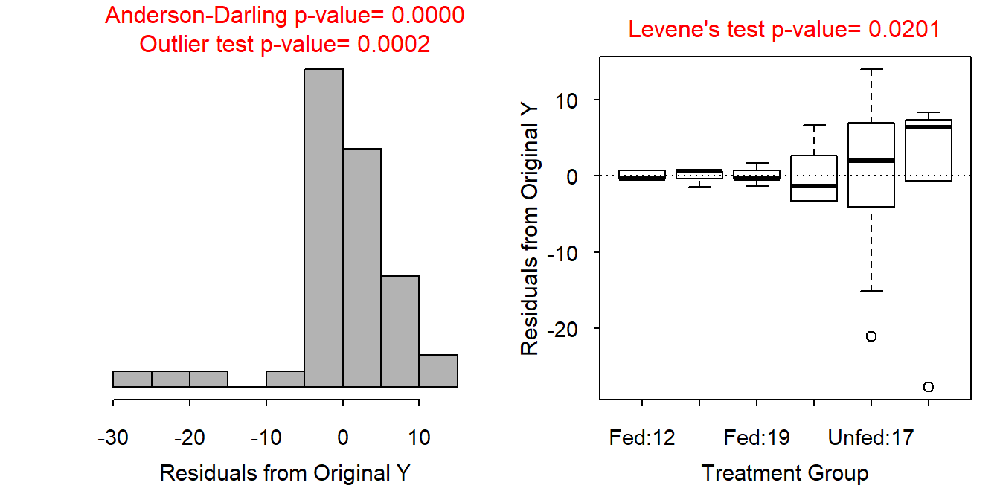
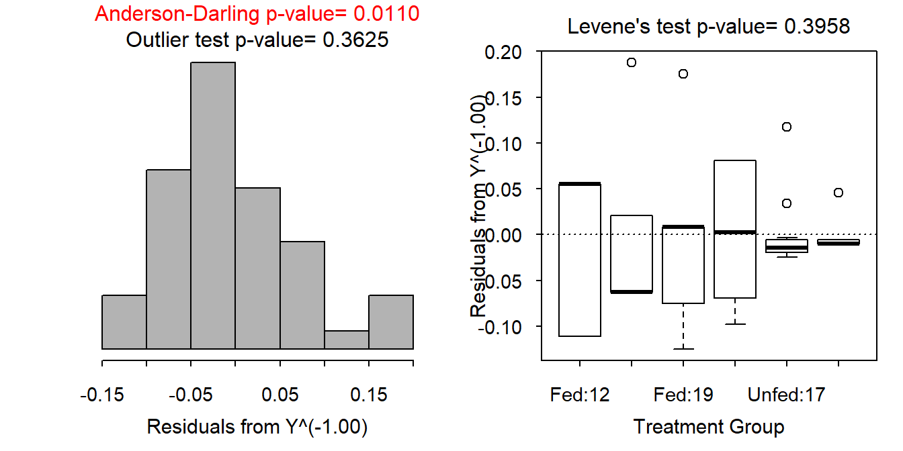
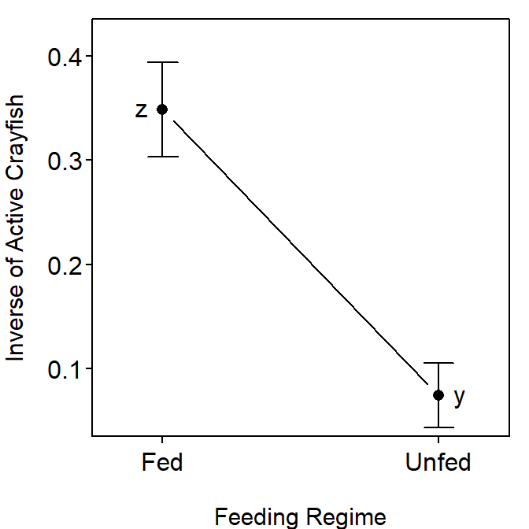

Feeding Under Risk of Predation
- These data were analyzed with an inverse transformation, which means that “small” values on the transformed scale are actually “large” values on the original scale. Thus, small means on the transformed scale actually represent more active crayfish on the original scale.
- No multiple comparisons p-values are shown for feeding regime because there are only two levels and it is already known from the ANOVA table that those two levels differ.
- Make note of the careful language about the “mean inverse number of crayfish” being different as the data were tested on the transformed scale.
- All of the multiple comparisons confidence intervals are for differences in two means. However, don’t say “the difference in means is between XXX and XXX.” Rather be specific about which group is smaller (Or larger) and by how much. Make note of this in my language below.
-
You will receive a warning of “covariate interactions found – default contrast might be inappropriate” when running the multiple comparisons with these data because the model (in
lm2) contains an interaction term and in the multiple comparisons method you are using main effects. The warning is a reminder that main effects should not be interpreted if you have an interaction effect in your model. However, the interaction is not significant in this example and, thus, does not overly influence the main effect tests. In this case, the warning can be ignored.
The individuals (group of 50 crayfish) appear to be independent both within and among treatments. Independence within treatments is apparent as it was implied that different groups were used for each replicate and the groups (presumably the individuals within the gruops) were randomly selected. In other words there is no connection (like using the same individuals or individuals that were non-randomly connected) among groups within treatments. Independence among treatments is indicated by the same reasoning. However, it is also evident that there is no connection (or pairing) of groups among treatments as the treatments have different numbers of replicates.
On the original scale (Figure 1) the variances are unequal (Levene’s p=0.0201), the residuals are not normal (Anderson-Darling p=0.0110) nor symmetric, and there is one possible outlier (individual 44; p=0.0002). The trial-and-error method suggested an inverse transformation for the number of active crayfish (response variable). This transformation (Figure 2) provided equal variances (Levene’s p=0.3958), residuals that are not normal (Anderson-Darling p=0.0110) though not “long-tailed” (Figure 2), and no significant outliers (p=0.3625). Thus, the assumptions for a two-way ANOVA have been largely met on the inverse scale with no individuals removed.
There is no significant interaction effect (p=0.8471; Table 1). There are significant main effects for both feeding regime (p<0.00005; Table 1) and time of day (p<0.00005; Table 1).
The mean inverse number of active crayfish was between 0.19 and 0.36 lower for the fed than unfed crayfish (Table 2). Thus, significantly more crayfish were active in the fed than the unfed treatments (Figure 3).
The mean inverse number of active crayfish was between 0.04 and 0.22 lower at 1200 than at 1700 and between 0.01 and 0.22 lower at 1200 than at 1900 (Table 3; Table 4). The mean inverse number of active crayfish did not differ between 1700 and 1900 (Table 3). Thus, there are significantly more crayfish active at 1700 and 1900 than at 1200, but there is no difference between 1700 and 1900.
Summary plots of these results are in Figure 3.
These results show that there are more active crayfish in the unfed treatment and at 1700 and 1900 than at 1200. Thus, there are more active crayfish when competition is high and at dusk and early evening.
Table 1: Analysis of variance table for inverse transformed crayfish activity level by feeding regime and temperature.
Df Sum Sq Mean Sq F value Pr(>F)
feed 1 0.90137 0.90137 159.4397 6.873e-16 ***
time 2 0.14498 0.07249 12.8224 4.501e-05 ***
feed:time 2 0.00188 0.00094 0.1666 0.8471
Residuals 42 0.23744 0.00565
---
Signif. codes: 0 '***' 0.001 '**' 0.01 '*' 0.05 '.' 0.1 ' ' 1Table 2: Tukey’s multiple comparison confidence intervals for the time of day term in the two-way ANOVA of inverse transformed crayfish activity level by feeding regime and temperature.
Estimate lwr upr
-0.2753968 -0.3630022 -0.1877914 Table 3: Tukey’s multiple comparison results for the time of day term in the two-way ANOVA of inverse transformed crayfish activity level by feeding regime and temperature.
Estimate Std. Error t value p value
17 - 12 = 0 -0.1319444 0.03759437 -3.5096862 0.003070442
19 - 12 = 0 -0.1194444 0.04341024 -2.7515269 0.023011520
19 - 17 = 0 0.0125000 0.03759437 0.3324966 0.940634205Table 4: Tukey’s multiple comparison confidence intervals for the feeding regime in the two-way ANOVA of inverse transformed crayfish activity level by feeding regime and temperature.
Estimate lwr upr
17 - 12 -0.1319444 -0.22317691 -0.04071198
19 - 12 -0.1194444 -0.22479062 -0.01409827
19 - 17 0.0125000 -0.07873246 0.10373246

Figure 1: Histogram of residuals (left) and boxplot of residuals by treatment group (right) for the crayfish and bass feeding study.

Figure 2: Histogram of residuals (left) and boxplot of residuals by treatment group (right) for the inverse number of crayfish feeding in the crayfish and bass feeding study.

Figure 3: Main effects plots for the two-way ANOVA of the inverse of activity level by feeding regime and temperature. Treatment means with different letters are significantly different.
R Appendix.
setwd("c:/biometry/")
cray <- read.csv("CrayfishPredation.csv")
cray$time <- factor(cray$time)
lm1 <- lm(active~feed*time,data=cray)
transChooser(lm1)
cray$t.active <- cray$active^(-1)
lm2 <- lm(t.active~feed*time,data=cray)
transChooser(lm2)
anova(lm2)
mc2 <- glht(lm2,mcp(time="Tukey"))
summary(mc2)
fitPlot(lm2,which="feed",ylab="Inverse of Active Crayfish",
xlab="Feeding Regime",ylim=c(0.05,0.42))
addSigLetters(lm2,which="feed",lets=c("z","y"),pos=c(2,4))
fitPlot(lm2,which="time",ylab="Inverse of Active Crayfish",
xlab="Time of Day",ylim=c(0.05,0.42))
addSigLetters(lm2,which="time",lets=c("a","b","a"),pos=c(2,2,4))